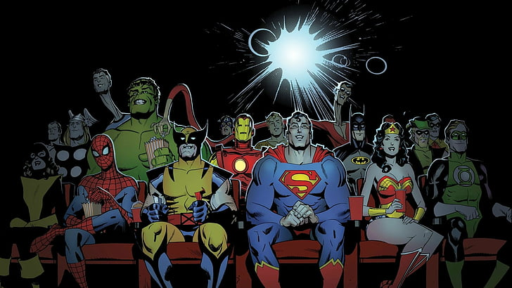

Notícias
Publicado em 10 de maio de 2023
Marvel VS DC: Qual universo de herois é mais poderoso?
"DC vs Marvel: O Conflito do Século completou 26 anos"
Por MisterEu
No que diz respeito aos quadrinhos de super-heróis americanos, Marvel e DC são certamente os maiores players do mercado.
As duas editoras existem há várias décadas e nos deram algumas histórias e personagens brilhantes como Homem de Ferro, Thor, Hulk, Viúva Negra, Homem-Aranha (Marvel) e Batman, Superman, Mulher Maravilha, Flash e Aquaman (DC).
No entanto, o que muitos fãs de ambas as editoras se questionam é “quem venceria em um confronto direto entre os heróis da Marvel e da DC?” É isso que buscaremos responder a seguir.
Marvel Comics: Leveza e descontração
A Marvel Comics é uma editora americana de quadrinhos fundada em 1939.
De 1939 a 1947, a empresa era conhecida como Timely Comics e, de 1947 a 1961, apareceu no mercado como Magazine Management, mas ambas as editoras são consideradas as antecessoras da moderna Marvel Comics, que foi oficialmente fundada em 1961.
A visão da Marvel sobre o gênero de super-heróis foi bastante revolucionária, pois eles nunca pensaram em adicionar muita escuridão às suas histórias, optando por criar histórias e personagens mais leves que atraiam os leitores que viam os quadrinhos como fonte de entretenimento.
Isso não levou a uma falta de qualidade, pois, graças a Jack Kirby e Stan Lee (e também a alguns autores posteriores) a Marvel conseguiu criar um dos maiores e mais populares universos ficcionais de todos os tempos.
DC Comics: Escuridão e drama
A DC Comics é uma das maiores e mais antigas editoras de quadrinhos dos Estados Unidos. Foi fundada em 1934 sob o nome National Allied Publications, mas isso mudou muito em breve.
Com o sucesso do título Detective Comics, foi criada a sigla DC e em 1937, a empresa mudou seu nome para DC Comics, que carrega até hoje.
O que fez a DC se destacar de outras editoras tradicionais na época foi sua abordagem a histórias mais sombrias e o fato de aceitar histórias muito mais profundas do que a Marvel.
Na verdade, foi The Dark Knight Returns, de Frank Miller, que realmente lançou o que hoje rotulamos como a ‘Era Moderna dos Quadrinhos’.
Quais são as diferenças entre a Marvel e a DC?
Quando se trata das diferenças entre Marvel e DC, precisamos abordar as semelhanças primeiro. Muitos dos personagens do Universo DC têm um caráter correspondente de poderes ou circunstâncias semelhantes ao Universo Marvel.
Existem, no entanto, algumas diferenças que se destacam. Além dos quadrinhos, as diferenças também se estendem para filmes e séries das duas franquias. As produções da Marvel, como dissemos anteriormente, costumam ser mais cômicas e positivas. Enquanto isso, as produções da DC são mais sombrias e tem um tom mais dramático.
Mesmo com abordagens diferentes, ambas as editoras já sofreram problemas de censura ao longo dos anos, como no caso de ‘The Dark Knight’ (DC) e ‘Deadpool’ (Marvel). Ambos os filmes não estão disponíveis em algumas regiões.
Porém, se você é um fã de super-heróis, e está tendo problemas com censura, com a ajuda das melhores VPNs gratuitas para Netflix, em que você pode confiar, é possível contornar o problema e assistir todos os filmes/séries de ambos universos para ver por conta própria as diferenças entre as dois universos.
Marvel vs. DC: Quem tem os heróis mais fortes?
Ao considerar quem tem os super-heróis mais fortes entre os dois universos, precisamos considerar os personagens mais poderosos da Marvel ao lado dos personagens mais poderosos da DC.
Você pode estar pensando no Superman vs. Capitão América ou no Batman vs. Homem de Ferro. Contudo, tanto o Universo Marvel quanto o DC têm uma ampla gama de entidades que são muito mais poderosas do que a ‘lista’ de heróis e vilões que você pode conhecer.
Provavelmente os dois lutadores mais poderosos são o ‘Protégé’ da Marvel e ‘A Presença’ da DC. A Presença é basicamente o Deus do Universo DC, enquanto Protégé é uma entidade cósmica que pode imitar os poderes de outras entidades.
Dessa forma, ele pode ter poderes iguais a qualquer outro personagem. O que é uma reviravolta estranha, pois significa que ele pode igualar o poder de qualquer personagem da DC em uma batalha hipotética.
Dessa forma, de um modo geral, uma batalha considerando o personagem mais forte de cada universo resultaria em um empate em termos de poder/força.
Veredito Final
E aí, quem ganha nessa batalha de franquias? Bem, só pode haver um vencedor… nós. Sim, sem dúvida os leitores são os espectadores, pois podemos assistir essas histórias incríveis.
Em um nível pessoal, a maioria das pessoas tenderá a ter um lugar em seus corações para um personagem de cada franquia. E é assim que gostamos. Porque no nosso universo, você não precisa ter um vencedor neste concurso.
Este artigo foi escrito para destacar algumas diferenças importantes entre os quadrinhos da Marvel nos quadrinhos da DC para ajudar as pessoas a tomar sua própria decisão sobre qual franquia eles querem investir seu tempo em ler mais.